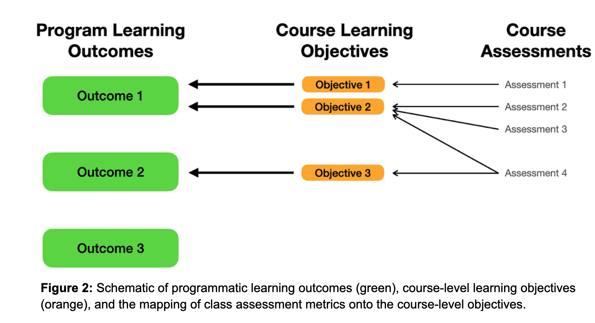
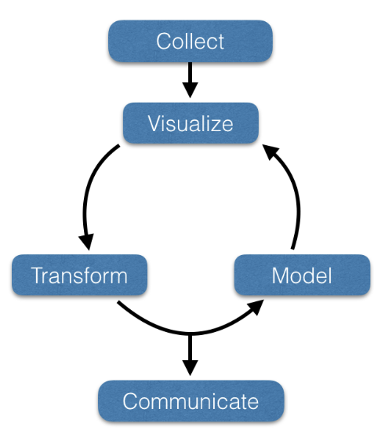
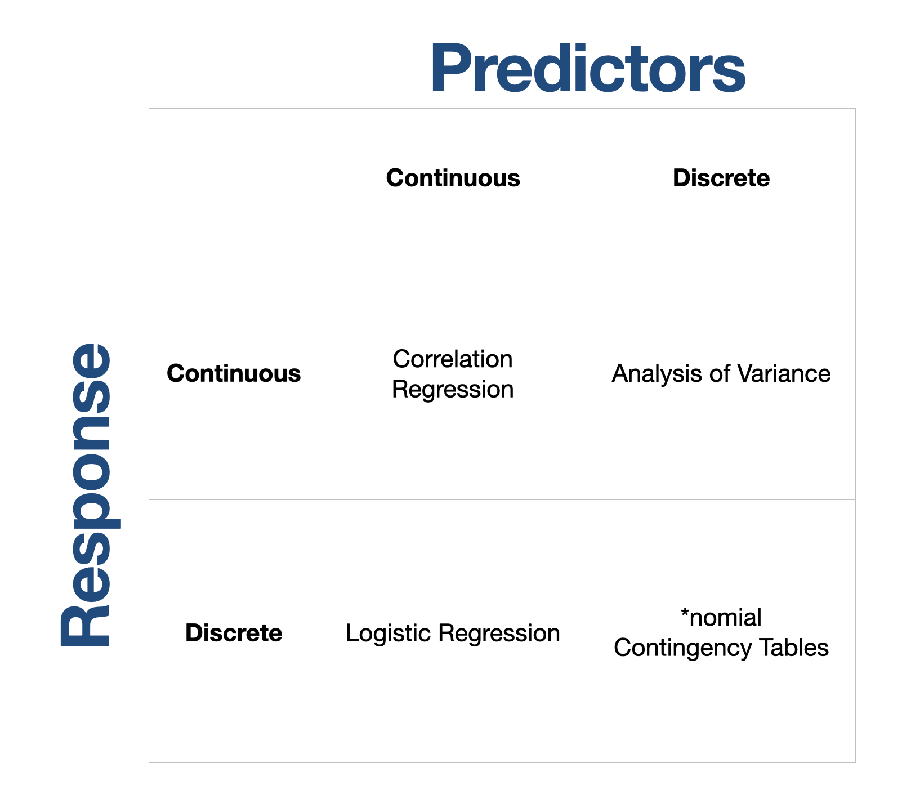

1 Environmental Data Literacy
1.1 ENVS 543: Environmental Data Literacy Fall 2023
Semester course; 3 lecture hours. 3 credits. Enrollment is restricted to students with graduate standing or those with one course in statistics and permission of instructor. Develop quantitative skills for the visualization, manipulation, analysis, and communication of environmental ‘big data.’ This course focuses on spatial environmental data analysis, data interpretation, manipulation, & analysis of real-world sized data sets, and developing methods and practices that aid in scientific communication using the R statistical analysis environment.
2 Logistics
2.1 Sources of Truth
Canvas will be used as the official grade repository as well as where I post announcements about course content. - Communication with be through your @vcu.edu email address.
2.2 Philosophy of Backwards Design
2.3 Stage 1: Identify Desired Results
- Determining the overarching learning goals for graduate-level classes
- Writing clear and measurable learning outcomes
- Ensuring alignment with program objectives and standards
2.4 Stage 2: Determine Acceptable Evidence
- Selecting appropriate assessment methods for graduate-level courses
- Designing authentic assessments that demonstrate mastery of advanced concepts
- Incorporating formative and summative assessments
2.5 Stage 3: Plan Learning Experiences and Instruction
- Designing engaging and meaningful learning experiences for graduate students
- Identifying instructional strategies that promote deep learning
- Incorporating technology and resources to enhance instruction
2.6 Stage 4: Implement and Reflect
- Collecting and analyzing data to inform instructional decisions
- Reflecting on the effectiveness of the Backwards Design process
- Evaluate and promote additive content for the participants
2.7 Mapping Content Context

2.8 Importance of Data Literacy

2.9 Workflow in Data Analysis
Common Workflow:
- Collect
- Visualize
- Transform
- Model
- Communicate

2.10 Student Learning Objectives
Student Learning Objectives (SLO) are statements that directly specify what participants will know, be able to do, or be able to demonstrate when they have completed or participated in the specific learning activity.
These define the active verbs of your learning experiences. At the end of a course, you should be able to implement or demonstrate mastery from each SLO.
2.11 EVS543 Student Learning Objectives
These all map onto MS/MEnvs Program-Learning Outcomes.
- SLO 1: Identity, manipulate, and summarize numerical, categorical, ordinal, logical, date, string, and spatial data types.
- SLO 2: Create habits and took the knowledge to support reproducible research.
- SLO 3: Create an informative and effective graphical display of various data types of suitable quality for inclusion in published manuscripts.
- SLO 4: Effectively choose appropriate statistical models based on the types of data at hand and the questions being addressed.
- SLO 5: Demonstrate a general understanding of spatial data types and the creation of both appropriate static and dynamic maps.
3 Course Content
3.1 Content Part 1: Analytical Background
| Deliverable | Details | SLO |
|---|---|---|
| Welcome & Logistics | Setting up the computational environment for the class. | NA |
| Git, Github & Markdown | Establish a functional working knowledge of git, github, and begin learning Markdown | 2 |
| Data Types & Containers | Understanding the fundamental grammar and objects in R. | 1,2 |
| Tidyverse | Data manipulation. Like a boss. | 1, 2 |
| Graphics that DON’T suck | Hello publication quality graphics, using the grammar of graphics approach | 2,3 |
| AI & Data Analytics | Leveraging large language models to aid in scientific communication | 1,2,3,4 |
3.2 Content Part 2: Statistical Inferences

| Deliverable | Details | SLO |
|---|---|---|
| Statistical Confidence | Base understanding of statistical inferences and the properties of sampled data | 1,2,4 |
| Binomial Inferences | Analyses based upon counts and expectations. | 4 |
| Categorical~f(Categorical) | Contingency table and categorical count data | 4 |
| Continuous~f(Categorical) | Analysis of Variance (or equality of means) | 4 |
| Continuous~f(Continuous) | Correlation & Regression approaches | 4 |
3.3 Topic Modularity
Each of the topics listed are entirely self-contained (example). They will each have:
- Student Learning Objectives relevant to the Topic
- Preparatory Content & Resources
- In-Person Content & Resources
- Assessment Tools
3.4 Prepatory Content & Resources
These items are intended to provide everyone a background foundation understanding of the topic and should be gone through prior to class where we are working on this topic.
3.5 In-Person Content & Resources
This content is intended for in-person activities. In addition to presentation content, these items may include activities for individual work, group project work, reflection activities, and other assessment metrics.
3.6 Assessment Tools
The ability of participants to understand, practice, and demonstrate mastery of a topic can be evaluated using both direct and indirect methods. These will come in a variety of formats.
3.7 Topic Duration
While each self-contained learning module is self-contained and will take as long as it takes to master, there are some limitations to how work is distributed and evaluated in this course.
Data analytics are never…
- done in 50 minute increments
- performed in isolation
- completed from memory
All evaluatory content will be due 1 week (7 days) later.
3.8 Grading Policy
The grade for this course is based upon the totality of the points gained for all assignments as well as a single large data analysis project that will be due at the end of the semester. Grades will be determined using the normal 10% scale:
- A (>= 90%),
- B (>= 80% & < 90%),
- C (>= 70% & < 80%),
- D (>= 60% & < 70%), and
- F (< 60%).
3.9
3.10 Additional Information
The Office of the Provost has a list of additional information relevant for syllabi. Please go visit that page and look over it to familiarize yourself with University-wide regulations and guidelines.
3.11 Questions on Logistics?
Any questions?1
Return to the course index page.